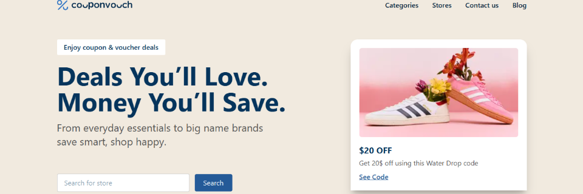

I build sleek, responsive, and user-friendly web experiences.
Check out my projects, see what I’ve been working on, and explore
the ideas that drive me.
Intro
Hey 👋! I’m Fred (ZIHALIRWA) Kaneza
, a full-stack
developer and inspired hacker driven by curiosity and creativity.
I build clean, responsive, and scalable web applications from
concept to deployment — blending solid frontend experiences with
reliable backend logic. My toolkit includes HTML, CSS, JavaScript,
TypeScript, React.js, Next.js, Python, and PostgreSQL —
technologies I use to turn complex ideas into elegant, real-world
solutions. When I’m not writing code, you’ll catch me exploring
cybersecurity stories on Darknet Diaries, deep-diving
into documentaries, or gaming with friends — always learning,
experimenting, and having fun along the way.
Interested in my journey and skills?
📄 English Version:
Download my Resume
to explore my professional experience, technical skills, and
projects in detail.
Work
I'm passionate about side projects and building in public. Here, you
can explore 13 different websites, apps, and libraries I've
built—some are still active, others have been discontinued, and a
few are still in progress.
Featured Projects

Coupon Vouch
Discover and redeem top coupons, vouchers, and discount deals
from your favorite stores.
I’m passionate about building innovative solutions and continuously
expanding my skill set. Check out my
GitHub
for the latest code and projects.
About
I'm a frontend-focused developer passionate about building sleek,
responsive, and user-friendly web applications. My journey started
with a
Frontend Development certificate
from Kreativstrom, and I’m continuously sharpening my skills at
ZTM Academy. Every project I work on is a step toward mastering my craft and
pushing my limits.
Beyond Code
When I’m not coding, I’m probably listening to Podcasts, watching
movies, diving into documentaries, or gaming with friends. I love
learning new things—whether it’s tech-related or just random
knowledge that sparks my curiosity.
Let’s Connect
Always open to collaborations, discussions, or just chatting about
tech (or movies!). Hit me up through my
Contact Page.